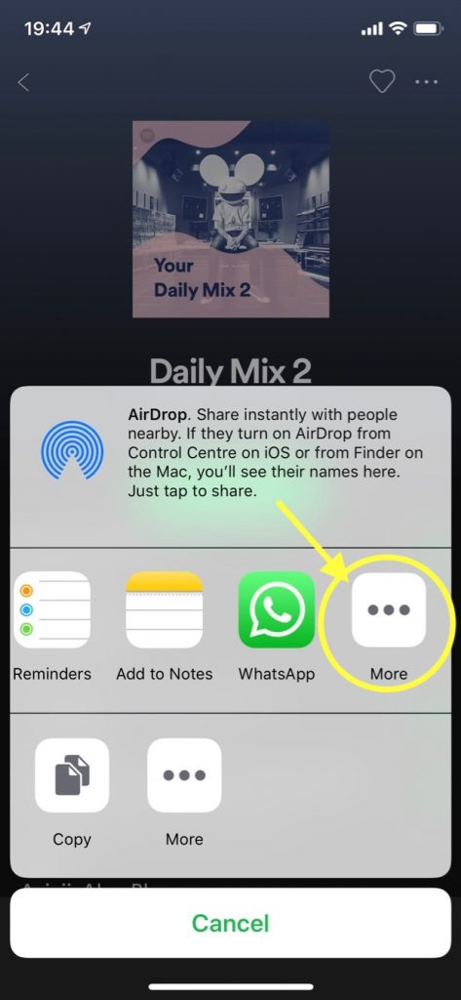
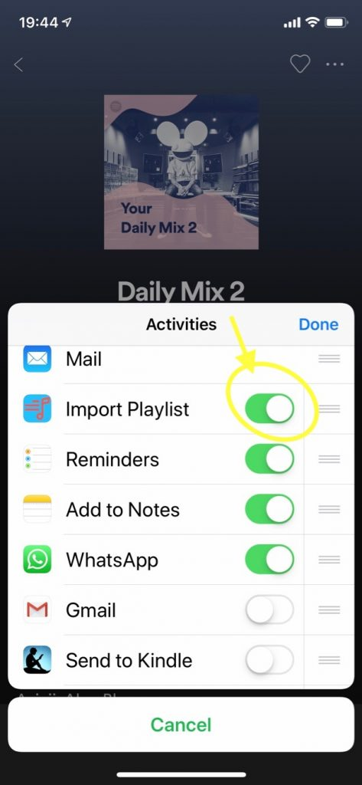

Scroll to the right hand end of the list of “Share Extensions”, and select “More”.

Scroll down the list until you find “Playlisty”, and then turn it on. If you want to save a bit of time it’s worth moving it nearer the top of the list as well – this will make it quicker & easier to find.